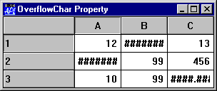
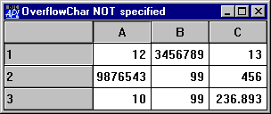

| Applies To: | Grid |
Description
The OverflowChar property specifies the character to be displayed in place of the digits when a numeric value cannot be displayed in its entirety in a Grid cell. If the value of OverflowChar is an empty vector (the default) the data in a numeric cell is simply clipped if it is too wide to fit in the cell. For example:
'F'⎕WC'Form'('Coord' 'Pixel')('Size' 101 296)
'F'⎕WS'Caption' 'OverflowChar Property'
DATA←3 3⍴12 123456789 13 9876543 99 456 10 99 1236.893
'F.G'⎕WC'Grid'DATA(0 0)(101 296)
'F.G'⎕WS'CellWidths' 65
'F.G'⎕WS'OverflowChar' '#' 
The same Grid without OverflowChar being defined appears as follows. Notice how the numbers have been truncated
